QMUL, TSE and CEPR
Brown University
November 13, 2026
© Getty Images
Can broader capital access + ownership make redistribution more productive?
Quantitative model: lifecycle investment and financing constraints
UBC supports investment in human and business capital
SWF weakens saving incentives, yet private capital rises with UBC
+9.0% child investment
+7.9% young human capital
+5.6% effective labor
+6.4% output
+1.6% private capital
+2.5% total capital
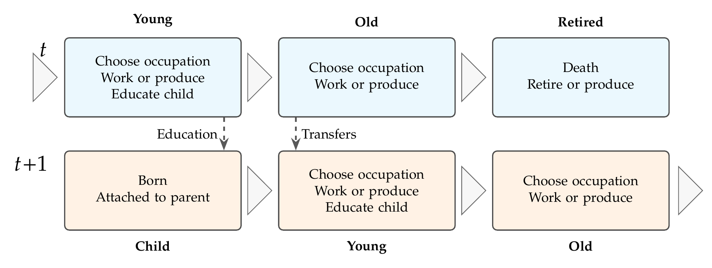
\[ \begin{aligned} V_s(a,h,z)&=\mathbb E_{\xi}\!\left[ \max\left\{\bar V_s^W(a,h,z)+\xi_s^W,\; \bar V_s^E(a,h,z)+\zeta_s+\xi_s^E\right\}\right]\\[0.6em] \bar V_s^o(a,h,z)&=\mathbb E_{\epsilon^o} \left[V_s^o(a,h,z,\epsilon^o)\right],\qquad o\in\{W,E\},\quad s\in\{1,2,3\} \end{aligned} \]
Given occupation \(o\) and realized shock \(\epsilon^o\),
\[ \begin{aligned} V_1^o(a,h,z,\epsilon^o) &=\max_{c,a',e,n}\Bigl\{q_1u(c)-\mathbf 1_{\{o=W\}}v_1(n)+\beta\,\mathbb E_{\eta_h}\bigl[\widetilde V_2(a',h,z,h')\bigr]\Bigr\}\\[0.5em] c+a'+e&=(1+r)a+y^o-T(y^o,a,c)+{\color{red} \omega}\\ y^W&=\psi_1\epsilon^h whn, \qquad h'=H(h,e,\eta_h)\\ y^E&=(1-{\color{red} \kappa})\max_{k,\ell\geq0} \Bigl\{\,{\color{blue}{\epsilon^{z}}} z(k^\alpha\ell^{1-\alpha})^\nu-w\ell-Rk\Bigr\} \end{aligned} \]
\({\color{red}{\Omega_s}}\): present value of transfers from stage \(s\) onward
Borrowing and collateral constraints \[ a_{s+1}\geq-\frac{{\color{red}{\phi_h\Omega_{s+1}}}}{1+r}, \qquad k\leq\lambda(a+{\color{red}{\phi_k\Omega_s}}) \]
\({\color{red}{\phi_h}}\): pledgeable share for child investment and saving
\({\color{red}{\phi_k}}\): pledgeable share for entrepreneurial capital
Public ownership: share \({\color{red} \kappa}\) of entrepreneurial capital \[ (1-{\color{red} \kappa})k\le\lambda(a+\color{red}{\phi_k\Omega_s}) \]
Net fund income: business returns minus depreciation and debt service
Use of proceeds: universal dividends or lower taxes
Corporate firms also employ capital and labor
Tradeoff: can lower capital returns, leading to ambiguous GE effects
\[ \begin{aligned} \widetilde V_2(a,h,z,h')&= \max_{b\geq0}\left\{V_2(a-b,h,z)+\theta\,\mathbb E_{z'\mid h'}V_1(b,h',z')\right\}\\[0.6em] z'&=Z(h',\eta_z') \end{aligned} \]
\[ \begin{aligned} T_t+S_t+\Delta B_t&=G_t+N{\color{red} \omega_t}+r_tB_t+\delta K_{g,t}+\Delta K_{g,t}\\[0.6em] K_{g,t}&={\color{red} \kappa_t}\int k_t(x)\,d\mu_t^E(x),\qquad {\color{blue}{B_t=K_{g,t}}} \end{aligned} \]
\(\mu_t^E\): entrepreneur population across ages, states and shocks
\(T\): taxes · \(S\): fund receipts · \(G\): pensions and other spending
Net fund income: \(S_t-(r_t+\delta)K_{g,t}\)
Universal dividends or lower ordinary taxes
For now: immediate and permanent debt rollover of SWF when introduced
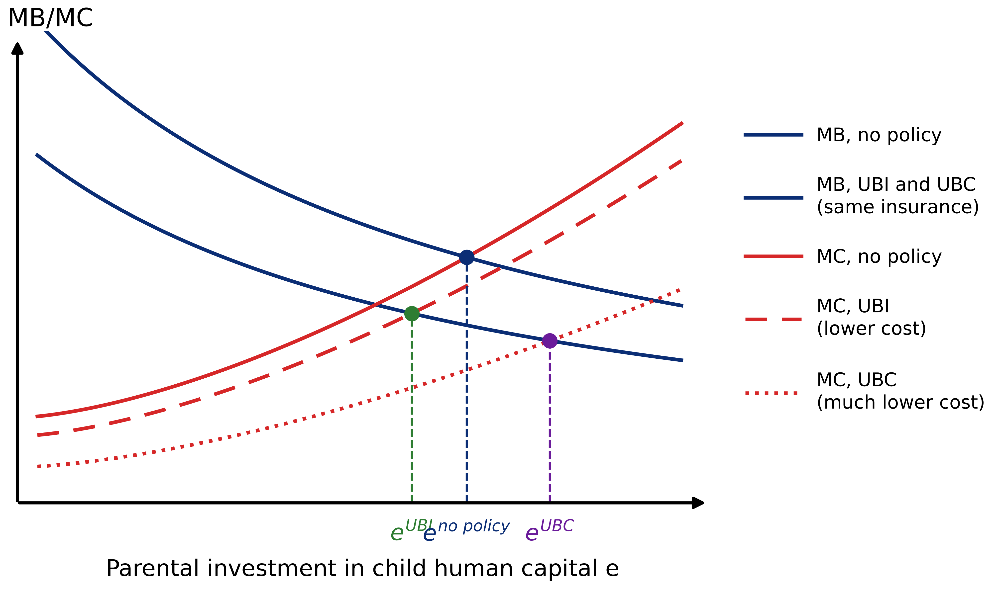
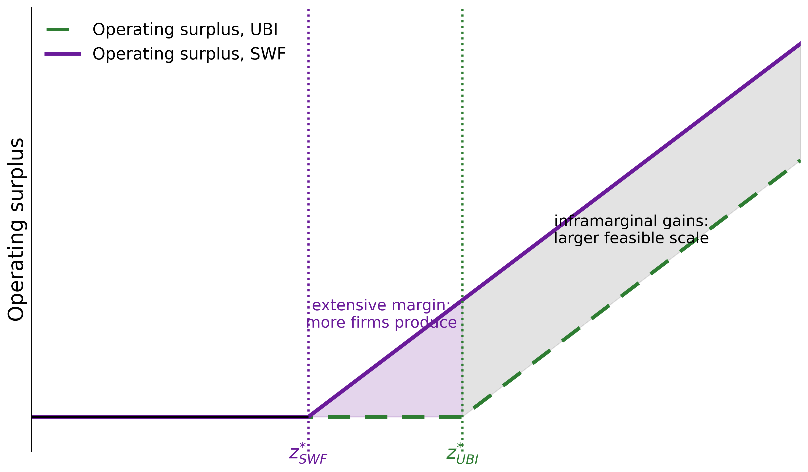
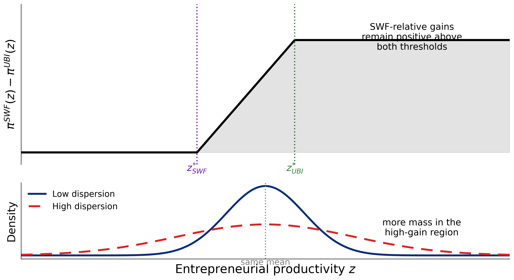
| A: UBC+SWF | B: Tax-funded UBC | C: SWF tax cuts | |
|---|---|---|---|
| Public business share | \({\color{red} \kappa}=0.10\) | \({\color{red} \kappa}=0\) | \({\color{red} \kappa}=0.10\) |
| Dividend pledgeability | Full | Full | — |
| Additional dividend | 1.41% | 1.41% | — |
| Change in total taxes | +0.52% | +1.10% | −0.30% |
Annual amounts per adult / initial benchmark average wage · Taxes include income, consumption and capital taxes
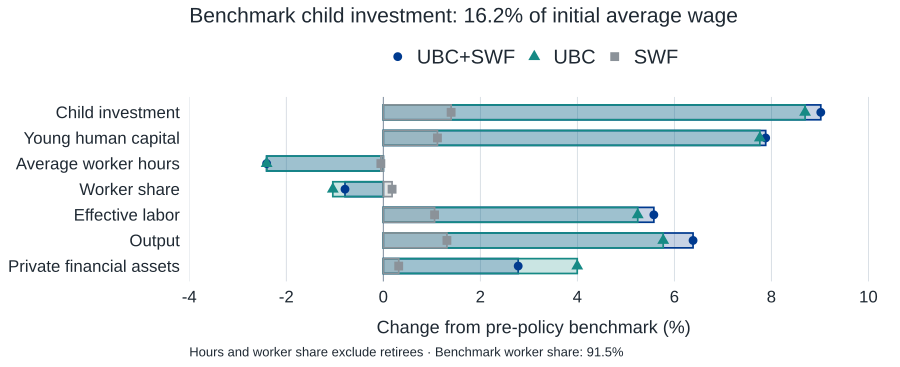
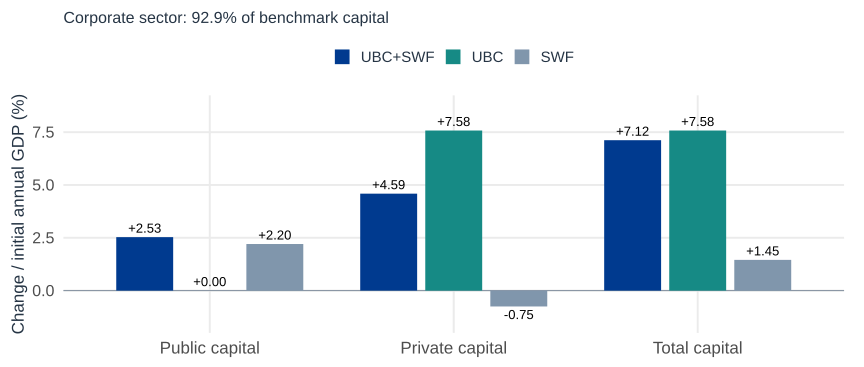
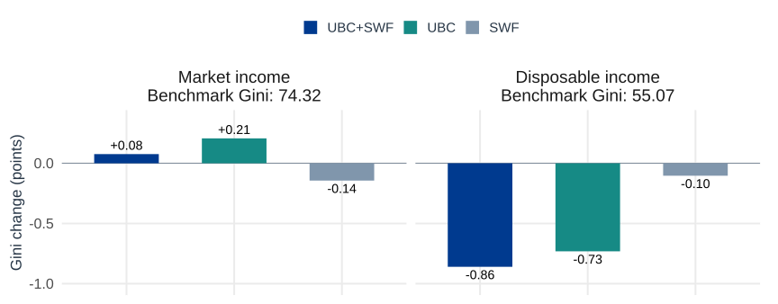
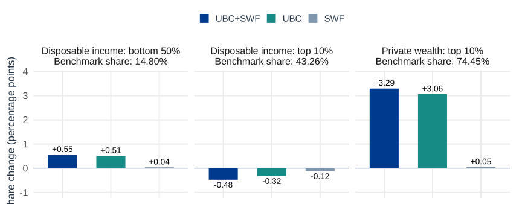
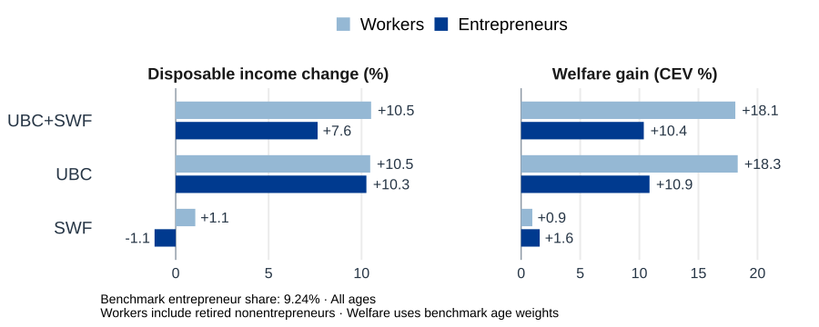
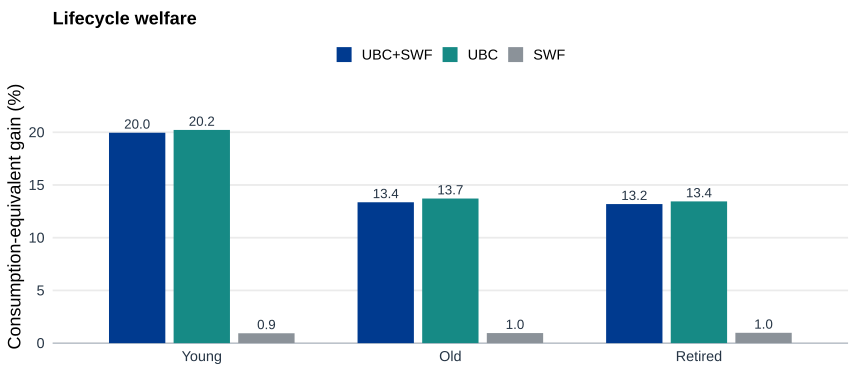
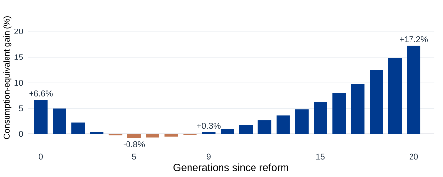
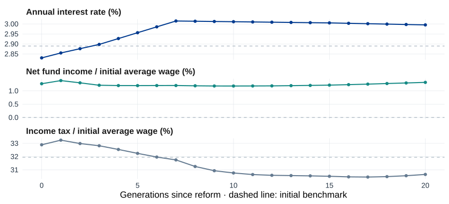
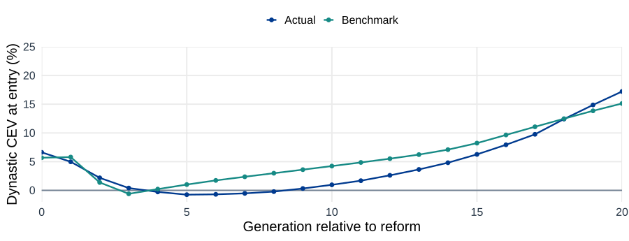
Inclusive capitalism:
| Outcome | Benchmark level | UBC+SWF | UBC | SWF |
|---|---|---|---|---|
| Annual output | 15.83 | +6.39% | +5.77% | +1.31% |
| Annual child investment | 0.90 | +9.02% | +8.69% | +1.40% |
| Young human capital | 15.69 | +7.88% | +7.76% | +1.12% |
| Effective labor | 7.89 | +5.58% | +5.25% | +1.06% |
| Private financial assets | 46.09 | +2.78% | +4.00% | +0.32% |
| Young entrepreneur share (%) | 1.52 | 1.75 | 1.87 | 1.41 |
| Entrepreneur wealth share (%) | 26.10 | 27.94 | 28.19 | 25.88 |
| Parent-child income rank correlation | 0.445 | 0.409 | 0.409 | 0.443 |
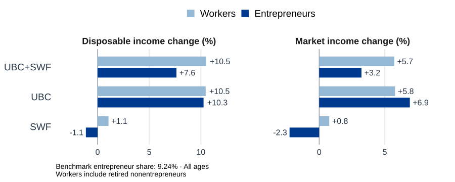
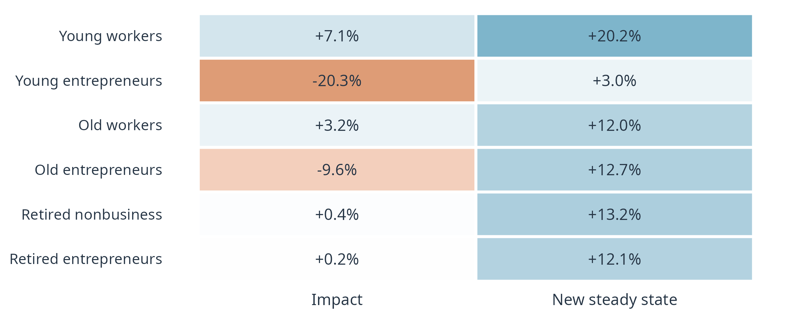
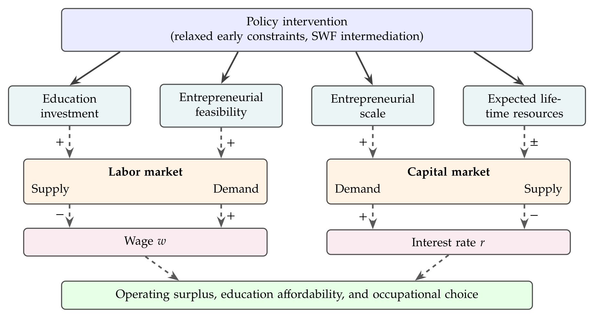
| Parameter | Description | Value | Source |
|---|---|---|---|
| \(L\) | Years per stage | \(22\) | |
| \(\chi,\varphi_1\) | Risk aversion / inverse Frisch | \((1.50,\;2)\) | |
| \(\varsigma\) | Retirement survival | \(0.58\) | |
| \(\alpha,\theta_C\) | Capital elasticities: business / corporate | \((0.33,\;0.33)\) | |
| \(\delta\) | Annual depreciation | \(6.00\%\) | |
| \(\lambda\) | Collateral multiplier | \(2\) | SCF 2019 |
| \(\psi_s\) | Earnings profile: young / old | \((1,\;1.14)\) | CPS 2017–2019 |
| \(\tau_1\) | Tax progressivity | \(0.20\) | HSV (2017) |
| \(\tau_a,\tau_c\) | Capital/consumption tax rates | \((0.36,\;0.05)\) | |
| \(\phi_h,\phi_k\) | Benchmark transfer pledgeability | \((0.13,\;0.13)\) | |
| \(\sigma_\xi\) | Occupation taste dispersion | \(6.35\times10^{-3}\) | |
| \(\sigma^h_s\) | Earnings-shock SD: young / old | \((0.88,\;1.04)\) | DeBacker et al. (2023) |
| \(p\) | Pension replacement | \(40.00\%\) | SSA (2011) |
| Parameter | Description | Value |
|---|---|---|
| \(\beta\) | Annual discount factor | \(0.97\) |
| \(\tau_0\) | Annual income-tax scale | \(1.10\) |
| \(\theta\) | Altruism | \(0.68\) |
| \(\varphi_{0,s}\) | Labor disutility: young / old | \((7.57,\;3.91)\) |
| \(\zeta_s\) | Occupation preferences: young / old / retired | \((0.42,\;6.87,\;-3.11)\times10^{-2}\) |
| \(\gamma\) | Child investment elasticity | \(0.69\) |
| \(\nu\) | Entrepreneurial returns to scale | \(0.82\) |
| \(\mu_z\) | Business ability level | \(0.51\) |
| \(\rho_h\) | Human-capital persistence | \(0.20\) |
| \(\rho_z\) | Human capital–ability link | \(0.15\) |
| \(\sigma_\eta^h,\sigma_\eta^z\) | Permanent skill-shock SDs | \((0.79,\;0.55)\) |
| \(\sigma^z_s\) | Business-shock SDs: young / old / retired | \((0.76,\;1.00,\;1.00)\) |
| Moment | Data | Model | Source |
|---|---|---|---|
| Education spending / GDP | \(5.80\%\) | \(5.66\%\) | OECD (2025) |
| Worker hours: young / old | \((0.28,\;0.23)\) | \((0.31,\;0.28)\) | CPS 2017–2019 |
| Entrepreneur shares (%) | \((8.44,\;14.77,\;8.26)\) | \((1.52,\;15.57,\;11.67)\) | SCF 2019 |
| Top 10% wealth share | \(76.19\%\) | \(74.45\%\) | SCF 2019 |
| Transfers / wealth | \(40.00\%\) | \(46.52\%\) | SCF 2019; Gale–Scholz (1994) |
| Parent–child income rank correlation | \(0.34\) | \(0.44\) | Chetty et al. (2014) |
| Entrepreneurial transmission ratio | \(1.60\) | \(2.10\) | Lindquist et al. (2015) |
| Persistent earnings SD | \(1.05\) | \(1.13\) | DeBacker et al. (2023) |
| Young–old log-profit covariance | \(8.89\) | \(6.94\) | DeBacker et al. (2023) |
| Young–old log-profit difference variance | \(13.51\) | \(17.29\) | DeBacker et al. (2023) |
| Capital/GDP | \(3.36\) | \(2.91\) | PWT 10.0, US 2019 |
| Government purchases / GDP | \(18.90\%\) | \(22.07\%\) | Heathcote et al. (2017) |